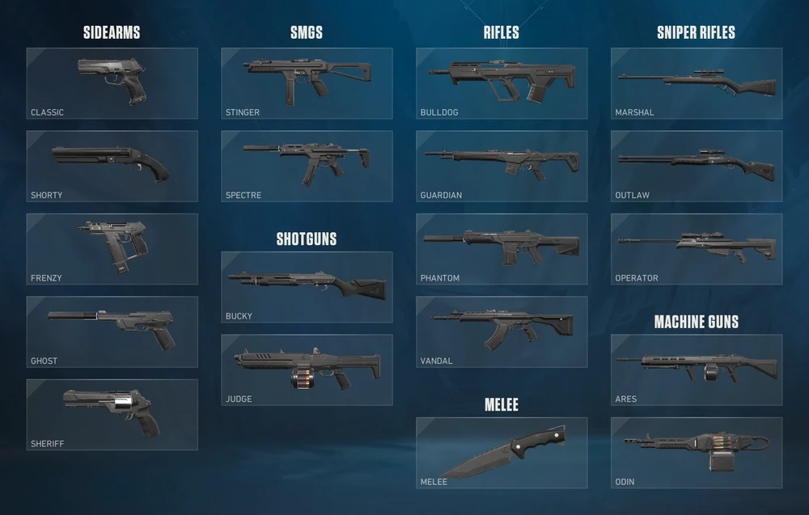

Weaponry
In FPS games, weapon choice is one of the most important decisions a player makes because it directly shapes how you fight, where you position yourself, and what your role is in a match. Different weapons are built for different situations, and understanding that is what separates random play from intentional, effective gameplay.
For example, in games like Call of Duty or Battlefield, assault rifles are often the most versatile option. They perform well at medium range and are forgiving for most players. But if you switch to a sniper rifle, your entire approach has to change. You'll focus on long sightlines, hold angles, and avoid close-range fights where you’re at a disadvantage. On the other hand, using a shotgun or SMG pushes you into aggressive, close-quarters gameplay where quick reactions matter more than precision at distance.
Weapon choice also affects movement and pacing. Lighter weapons usually allow faster movement or quicker aiming, which is useful for flanking or rushing. Heavier weapons might deal more damage but slow you down, forcing you to play more carefully. Good players don’t just pick what feels strong. They pick what fits the map, the mode, and their current objective.
Another key factor is adaptability. A weapon that works well on one map or against one type of opponent might be ineffective in another situation. For instance, tight indoor maps favor close-range weapons, while open maps reward long-range accuracy. Sticking to one weapon regardless of context can hold you back, while switching based on the situation gives you a consistent edge.
How this becomes team strategy
At a higher level, weapon choice becomes part of team strategy. In squad-based FPS games, players often take on roles—some hold long angles with precision weapons, while others clear spaces with close-range firepower. A balanced team with complementary weapon choices is far more effective than a group all using the same loadout.In short, weapon choice isn’t just about damage stats—it determines your playstyle, your positioning, and how useful you are to your team. If you want to improve in FPS games, paying attention to why you’re using a specific weapon in a specific situation is one of the fastest ways to get better.
